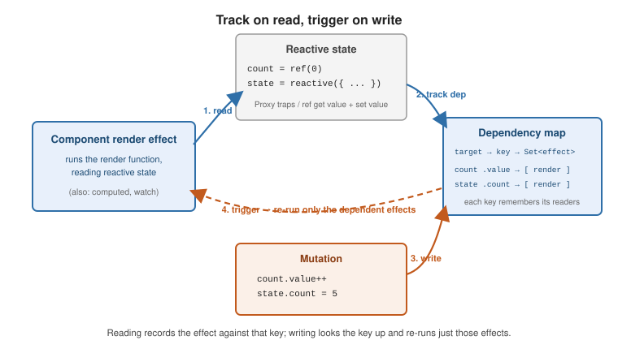

Reactivity Fundamentals
|
This content was generated with the assistance of AI and should be verified against the official documentation before being relied on in production. |
Reactive state is state that Vue watches: when it changes, every component and computed value that read it
re-runs. The Composition API declares this state with two functions, ref() and reactive(). This page
covers both and the rules around them, then a final section on the Proxy machinery that makes it work,
drawn from Reactivity Fundamentals,
the core API and
the utilities API.
ref()
ref() wraps any value — primitive or object — in a reactive container with a single .value property.
<script setup>
import { ref } from 'vue'
const count = ref(0)
const user = ref({ name: 'Ada', roles: ['admin'] })
function bump() {
count.value++ // .value in script
user.value.name = 'Bo' // deep: nested mutation is tracked too
}
</script>
<template>
<!-- no .value in the template: top-level refs are auto-unwrapped -->
<button @click="bump">{{ count }} / {{ user.name }}</button>
</template>.value vs. template auto-unwrap. In JavaScript you always read and write count.value. In the template,
a ref used as a top-level property is unwrapped automatically, so {{ count }} works. The unwrap is only
shallow — {{ object.someRef }} is not unwrapped, and {{ someRef + 1 }} fails because someRef is
resolved before the +. Give such refs a const alias or wrap them in a reactive object.
Deep reactivity. A ref holding an object makes the whole object graph reactive via reactive() internally.
Use shallowRef() (below) to opt out.
reactive()
reactive() returns a Proxy of an object; reads and writes on the proxy are intercepted.
<script setup>
import { reactive } from 'vue'
const state = reactive({ count: 0, items: [] })
state.count++ // no .value -- it is a proxy, not a wrapper
</script>Its limits shape when you reach for it:
-
Objects only.
reactive()does nothing for primitives — useref()for a number or string. -
Keep the reference. Replacing the variable (
state = reactive({ ... })) drops the link to the proxy the template holds. Mutate the existing object instead. -
Destructuring loses reactivity.
const { count } = statecopies a plain number. Convert the properties to refs first withtoRefs(), or grab one withtoRef():
import { reactive, toRefs, toRef } from 'vue'
const state = reactive({ x: 1, y: 2 })
const { x, y } = toRefs(state) // x, y are refs linked back to state
const xRef = toRef(state, 'x') // single property as a ref
x.value++ // updates state.xref vs. reactive: which to use
Prefer ref() as the default. It works for every type, survives destructuring and function boundaries when
passed as a whole, and makes the reactive boundary visible through .value. Use reactive() for a tightly
scoped group of related fields where the .value noise outweighs its caveats. Do not mix a reactive
wrapper around ref values unless you need the ergonomics — nested refs inside a reactive object are unwrapped,
but refs inside a reactive array or Map are not.
DOM update timing and nextTick()
State changes do not touch the DOM synchronously. Vue buffers them and flushes once per tick, so multiple
mutations cost one re-render. To read the updated DOM, await nextTick():
<script setup>
import { ref, nextTick } from 'vue'
const count = ref(0)
const el = ref(null)
async function bump() {
count.value++
console.log(el.value.textContent) // still the old text
await nextTick()
console.log(el.value.textContent) // now updated
}
</script>
<template>
<p ref="el">{{ count }}</p>
</template><script setup> bindings and the template
Every top-level binding declared in <script setup> — imported names, const / let, function
declarations — is exposed to the template with no return. Reactive state stays reactive; a plain value is
just a constant the template can read. This is why the examples above never list what they expose.
How reactivity works
This section corresponds to Reactivity in Depth and the advanced API.
Track on read, trigger on write
reactive() uses a Proxy
to intercept property access; ref() uses get value() / set value() accessors. A stripped-down ref
shows the shape:
function ref(value) {
const r = {
get value() {
track(r, 'value') // record: the running effect depends on this
return value
},
set value(newValue) {
value = newValue
trigger(r, 'value') // re-run every effect that read it
}
}
return r
}An effect is a function whose reactive reads are tracked — a computed getter, a watch / watchEffect
callback, and above all a component’s render effect (its render function). While an effect runs it is the
"active" effect; every reactive value it reads adds it to that value’s dependency set. A later write to that
value looks the set up and re-runs only those effects.

Reactivity caveats
-
Adding properties — a Proxy tracks new root-level keys on a
reactiveobject (unlike Vue 2). Refs sidestep the question by holding the whole object in.value. -
Replacing an array or object —
state.list = [...]is tracked; reassigning the top-levelreactivevariable itself is not. -
Index and length writes —
arr[5] = xandarr.length = 0on areactivearray are tracked. -
Collections —
MapandSetare supported, but arefstored as aMapvalue is not unwrapped. -
Destructuring — pulls plain values out; use
toRefs()/toRef().
Advanced reactivity APIs
import {
shallowRef, triggerRef, customRef,
shallowReactive, shallowReadonly,
toRaw, markRaw,
effectScope, onScopeDispose,
} from 'vue'
// Shallow: only the top level is reactive
const big = shallowRef({ rows: [] })
big.value.rows.push(1) // NOT tracked
big.value = { rows: [] } // tracked (assignment to .value)
triggerRef(big) // force dependents to run after a deep mutation
const opts = shallowReactive({ nested: { a: 1 } }) // opts.nested is a plain object
const frozen = shallowReadonly({ a: 1 }) // top-level writes warn, nested allowed
// Escape hatches
const original = toRaw(reactive({ a: 1 })) // the un-proxied object
const external = markRaw({ sdk: thirdParty }) // reactive() / ref() will never proxy this
// customRef: full control over track / trigger -- here, a debounced ref
function debouncedRef(value, delay = 200) {
let timer
return customRef((track, trigger) => ({
get() {
track()
return value
},
set(next) {
clearTimeout(timer)
timer = setTimeout(() => {
value = next
trigger()
}, delay)
},
}))
}
// effectScope: own a group of effects and dispose them together
const scope = effectScope()
scope.run(() => {
watchEffect(() => {/* ... */})
onScopeDispose(() => {/* cleanup when the scope stops */})
})
scope.stop() // stops every effect created inside run()Integrating external and immutable state
For a large object you never mutate in place — an immutable data structure, a snapshot from another store — hold it in shallowRef and assign a new value on each change, calling triggerRef only if you mutate the
same reference deeply. Wrap third-party class instances in markRaw so Vue does not deep-proxy them. State
managers such as Pinia are built on exactly these primitives.
Worked example: a reactivity system in forty lines
The track and trigger idea fits in one file of plain JavaScript. The version below keeps the same three pieces as
Vue’s real implementation: a dependency map from target and key to a set of effects, an active effect variable
that track consults, and a Proxy / accessor pair that calls track on read and trigger on write. It runs as
shown with node mini.mjs (ES module, no dependencies):
// mini.mjs
let activeEffect = null
const targetMap = new WeakMap() // target -> Map(key -> Set(effect))
function track(target, key) {
if (!activeEffect) return
let deps = targetMap.get(target)
if (!deps) targetMap.set(target, (deps = new Map()))
let dep = deps.get(key)
if (!dep) deps.set(key, (dep = new Set()))
dep.add(activeEffect)
}
function trigger(target, key) {
const dep = targetMap.get(target)?.get(key)
if (dep) [...dep].forEach(run => run())
}
function effect(fn) {
const run = () => {
const prev = activeEffect
activeEffect = run // reads inside fn() are tracked against run
try { return fn() } finally { activeEffect = prev }
}
run()
return run
}
function reactive(obj) {
return new Proxy(obj, {
get(t, k, r) { track(t, k); return Reflect.get(t, k, r) },
set(t, k, v, r) {
const old = t[k]
const ok = Reflect.set(t, k, v, r)
if (old !== v) trigger(t, k) // unchanged writes do nothing
return ok
},
})
}
function ref(value) {
const r = {
get value() { track(r, 'value'); return value },
set value(v) { if (v !== value) { value = v; trigger(r, 'value') } },
}
return r
}
const state = reactive({ count: 0, label: 'clicks' })
const double = ref(0)
effect(() => console.log(`render: ${state.label} = ${state.count}`))
effect(() => { double.value = state.count * 2 })
effect(() => console.log(`double is ${double.value}`))
state.count++
state.label = 'taps'
state.count = 1 // same value, no triggerRunning it prints:
render: clicks = 0
double is 0
render: clicks = 1
double is 2
render: taps = 1Follow the output to see the rules at work. The first two lines are each effect’s initial run, which is what
populates the dependency map. state.count++ re-runs the render effect, which reads count, and the effect that
computes double; that effect writes double.value, which in turn triggers the third effect — dependencies chain.
state.label = 'taps' re-runs only the render effect, because nothing else read label. The last assignment
changes nothing, so nothing runs. What the toy omits is what the real library adds: dependency cleanup before each
re-run (so an effect that stops reading a key stops being triggered by it), lazy and cached computed, nested
effects, array and collection handling, and above all the scheduler described next.
Update scheduling
In a component the render function is an effect whose "re-run" is not immediate. Vue queues the update job instead, dedupes it by component, and flushes the queue once in a microtask:
that read count"] trig --> q["queue the render job
(skipped if already queued)"] q --> flush["microtask: flush the queue"] flush --> pre["pre-flush watchers"] pre --> render["component render and DOM patch
(parents before children)"] render --> post["post-flush callbacks
(watch with flush: post, onMounted)"] post --> next["await nextTick() resolves"]
Three consequences are easy to verify in a test: three consecutive writes to one ref cause a single render of the
component that displays it, the DOM still shows the old text right after the writes, and the text is current after
await nextTick(). A component test therefore awaits nextTick() (or the promise returned by
wrapper.setValue() / trigger()) before asserting on the DOM.
Identity, proxies and the escape hatches
The Proxy returned by reactive() is cached per target, so wrapping the same object twice returns the same proxy and
wrapping a proxy returns it unchanged; the proxy is never === the raw object. Use toRaw() when you need the
original, for example to compare against a value stored elsewhere or to pass an object to a library that checks
identity. A ref that is stored in a reactive object is unwrapped on access (state.r gives the number) but not
when stored in a reactive array, where list[0] is still the ref.
Opting out of deep tracking follows the same pattern as the earlier snippet. Starting from a shallowRef holding
{ n: 0 } and an effect that reads s.value.n, the sequence below was observed with a watchEffect:
const s = shallowRef({ n: 0 })
watchEffect(() => seen.push(s.value.n)) // seen: [0]
s.value.n++ // not tracked, effect does not run
triggerRef(s) // forces dependents to run: seen: [0, 1]
s.value = { n: 10 } // assignment to .value is tracked: seen: [0, 1, 10]The debounced customRef shown earlier behaves the same way under test: with fake timers, two quick writes
('b', then 'c') produce a single downstream run with 'c' once the delay has elapsed. And an effectScope
disposes everything created inside it: after scope.stop() the watcher no longer runs and the onScopeDispose
callback has fired.
See also
-
Computed Properties — cached derived state built on these refs.
-
Template Syntax — how templates read reactive state.
-
Getting Started —
<script setup>and the Composition API in context.